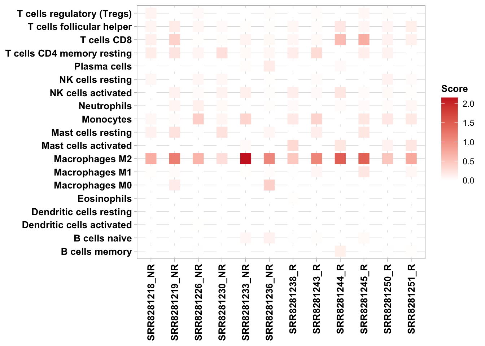

Chapter 6 Immune Infiltration
Cell infiltration estimation in the tumor microenvironment
TME is a complicated system consisting of tumor cells, immune cells, stromal cells, and extracellular factors. Estimating cell components is essential for classifying the distinct tumor immune microenvironment (TIME) phenotype. Furthermore, dissecting the TIME by evaluating cell components plays a significant role in untangling the mechanism of tumor progression and immune evasion, which is essential for providing a guideline for immunotherapy selection. There are two major approaches for estimating cell infiltration in TME, deconvolution-based and marker-based approaches. The deconvolution-based method infers cell type fractions from the bulk gene expression of a given list of signature genes, such as TIMER, quanTIseq, EPIC, and CIBERSORT. The marker-based approaches to quantify the enrichment score utilizing a list of cell-specific marker genes, such as xCell and MCP-counter. ImmuneDeconv is an R package that integrated these six methods. All six algorithms estimate cell infiltration of immune cells and stromal cells, while EPIC and quanTIseq make it available to assess uncharacterized cells defined as cancer cells. Of note, CIBERSORT absolute mode, EPIC, and quanTIseq support inter-comparison between sample groups and intra-comparison between cell types. And TIMER, xCell, and MCP-counter support only inter-comparison between sample groups for one cell type. Immune cell deconvolution is still an open question in the field, and different algorithms could give slightly different results. Each algorithm estimates one general cell type or specific cell subtype. The best way is to focus on the observations consistently predicted by various algorithms, in which case the gold standard is not available.
6.1 Cibersort
CIBERSORT is a deconvolution-based method that uses the v-support vector regression method (v-SVR) to estimate each immune cell type’s relative proportion from gene expression profile (GEP). It requires an input of reference gene expression signatures. CIBERSORT provided a gene signature matrix (LM22.txt) which contains 547 genes distinguish 7 T-cell types, naïve and memory B cells, plasma cell, and NK cells. The CIBERSORT absolute mode scales cellular fraction to a score that reflects each cell type’s absolute proportion, allowing comparison across both samples and cell types.
The CIBERSORT source code and LM22 signature matrix are only freely available to academic users, which can be applied through CIBERSORT website .
To run CIBERSORT using ImmuneDeconv:
#demo
suppressMessages(library(immunedeconv))
#read gene expression matrix
input <- "tpm_convertID.txt"
#load CIBERSORT source code and signiture matrix
source("CIBERSORT.R")
sig_matrix <- "LM22.txt"
#Run CIBERSORT abs
#The number of permutation
cibersort_perm = 100
#Quantile normalization of input mixture, default = FALSE for RNA-Seq data
cibersort_qn = FALSE
#whether to apply absolute mode in cibersort
cibersort_abs = TRUE
#sig.score = for each mixture sample, define S as the median expression,level of all genes in the signature matrix divided by the median expression level of all genes in the mixture. Multiple cell subset fractions by S.
cibersort_abs_method = "sig.score"
res_ciber <- CIBERSORT(sig_matrix, input, perm = cibersort_perm, QN = cibersort_qn, absolute = cibersort_abs,
abs_method = cibersort_abs_method)
head(res_ciber,3)## B cells naive B cells memory Plasma cells T cells CD8
## SRR8281218 0.002023271 0.003060637 0.000000000 0.12297118
## SRR8281219 0.010693087 0.000000000 0.001201108 0.38499197
## SRR8281226 0.000000000 0.008281786 0.000000000 0.01442307
## T cells CD4 naive T cells CD4 memory resting
## SRR8281218 0 0.14975225
## SRR8281219 0 0.22216858
## SRR8281226 0 0.08219228
## T cells CD4 memory activated T cells follicular helper
## SRR8281218 0 0.08924869
## SRR8281219 0 0.16924345
## SRR8281226 0 0.06671124
## T cells regulatory (Tregs) T cells gamma delta NK cells resting
## SRR8281218 0.09617560 0 0.06763887
## SRR8281219 0.00000000 0 0.00000000
## SRR8281226 0.04296535 0 0.07211706
## NK cells activated Monocytes Macrophages M0 Macrophages M1
## SRR8281218 0.0000000 0.06195550 0.0000000 0.01550602
## SRR8281219 0.1076938 0.03659288 0.1552708 0.03207925
## SRR8281226 0.0357515 0.41486727 0.0000000 0.00000000
## Macrophages M2 Dendritic cells resting Dendritic cells activated
## SRR8281218 0.7049077 0 0.000000000
## SRR8281219 1.1589577 0 0.000000000
## SRR8281226 0.6474766 0 0.004669831
## Mast cells resting Mast cells activated Eosinophils Neutrophils
## SRR8281218 0.11994310 0 0.003766691 0.00000000
## SRR8281219 0.24218289 0 0.000000000 0.07942792
## SRR8281226 0.01289667 0 0.002926060 0.12361329
## P-value Correlation RMSE Absolute score (sig.score)
## SRR8281218 0.06 0.15699314 1.027475 1.436950
## SRR8281219 0.28 0.05195861 1.072383 2.600503
## SRR8281226 0.08 0.13503937 1.054532 1.5288926.2 TIMER
TIMER uses linear least square regression to estimate six tumor-infiltrating immune cell types (B, CD4T, CD8T, neutrophils, macrophages, and dendritic cells). Since the tumor purity is very different across different cancer cell types, one of key steps is that TIMER selected the specific genes as immune signatures based on the correlation between gene expression and tumor purity.
Tutorial of TIMER:
Tutorial of TIMER2:
Note that the TIMER score can only be compared within samples, and the current version of TIMER supports 23 different TCGA cancer types.
#load gene expression matrix
df <- read.table(input, sep = ",", row.names = 1, header = TRUE, check.names = FALSE)
#The TCGA cancer acronyms of demo data
cancertype <- "GBM"
#Available cancer type
immunedeconv::timer_available_cancers
res_timer = as.data.frame(deconvolute(df, "timer",indications=rep(tolower(cancertype),ncol(df))))6.3 quanTIseq
The quanTIseq uses constrained least square regression to estimate absolute proportions of 10 immune cell types infiltration levels from RNA seq data. Therefore, the score of quanTIseq allows inter- or intra-samples comparison. quanTIseq provides an entire pipeline that can either process the pre-computed gene expression matrix (TPM matrix) or directly analyze bulk RNA-Seq data.
6.4 xCell
xCell performs single-sample gene set enrichment analysis (ssGSEA) on expression data to evaluate the enrichment of immune marker genes. These marker genes validated using cytometry immunophenotyping and in-silico simulations. Notes that results of xCell depend on the number of samples, the power of estimation might be lower if providing limited non-heterogeneous samples
6.5 EPIC
EPIC uses constrained least square regression to estimate six immune cell types, fibroblasts, and endothelial cells. EPIC collects a unique gene expression reference from circulating and tumor-infiltrating cells. Further, it extended its algorithm to evaluate the uncharacterized cancer cell. The score that comes from the EPIC algorithm is the absolute value that can be compared within or across samples.
6.6 MCP-counter
MCP-counter uses its transcriptomic markers (TM) curated from 81 public datasets to estimate fibroblasts, endothelial, and eight immune cell types. The difference of mean log2-expression of marker genes samples is a key to evaluate the immune cell infiltration levels.
6.7 Comparison across cell type
Using results from CIBERSORT abs mode as an example, we provide another two functions to do inter- or intra comparison.
## B cells naive B cells memory Plasma cells T cells CD8
## SRR8281218 0.002023271 0.003060637 0.000000000 0.12297118
## SRR8281219 0.010693087 0.000000000 0.001201108 0.38499197
## SRR8281226 0.000000000 0.008281786 0.000000000 0.01442307
## SRR8281236 0.119197082 0.000000000 0.175028807 0.05841897
## SRR8281230 0.000000000 0.001725996 0.000000000 0.02099308
## SRR8281233 0.074569126 0.000000000 0.022548328 0.09612605
## SRR8281244 0.000000000 0.133329588 0.041170411 0.58644201
## SRR8281245 0.057960600 0.000000000 0.001729094 0.71691961
## SRR8281243 0.021015715 0.000000000 0.000000000 0.05560813
## SRR8281251 0.000000000 0.014652173 0.000000000 0.12265135
## SRR8281238 0.010961877 0.000000000 0.000000000 0.07328546
## SRR8281250 0.000000000 0.007211828 0.000000000 0.11124637
## T cells CD4 naive T cells CD4 memory resting
## SRR8281218 0 0.1497522454
## SRR8281219 0 0.2221685808
## SRR8281226 0 0.0821922827
## SRR8281236 0 0.0616983261
## SRR8281230 0 0.2636255094
## SRR8281233 0 0.0540161771
## SRR8281244 0 0.0000000000
## SRR8281245 0 0.1346463483
## SRR8281243 0 0.2983063326
## SRR8281251 0 0.0008469304
## SRR8281238 0 0.1462044340
## SRR8281250 0 0.0912421429
## T cells CD4 memory activated T cells follicular helper
## SRR8281218 0 0.08924869
## SRR8281219 0 0.16924345
## SRR8281226 0 0.06671124
## SRR8281236 0 0.02097714
## SRR8281230 0 0.04434860
## SRR8281233 0 0.01702242
## SRR8281244 0 0.20198021
## SRR8281245 0 0.08491094
## SRR8281243 0 0.02547211
## SRR8281251 0 0.13107578
## SRR8281238 0 0.06549731
## SRR8281250 0 0.08310786
## T cells regulatory (Tregs) T cells gamma delta NK cells resting
## SRR8281218 0.096175601 0 0.06763887
## SRR8281219 0.000000000 0 0.00000000
## SRR8281226 0.042965351 0 0.07211706
## SRR8281236 0.016105425 0 0.01389437
## SRR8281230 0.003663422 0 0.06303278
## SRR8281233 0.000000000 0 0.00000000
## SRR8281244 0.000000000 0 0.00000000
## SRR8281245 0.064756411 0 0.00000000
## SRR8281243 0.024209477 0 0.02796011
## SRR8281251 0.000000000 0 0.03345416
## SRR8281238 0.000000000 0 0.00000000
## SRR8281250 0.021319048 0 0.11199972
## NK cells activated Monocytes Macrophages M0 Macrophages M1
## SRR8281218 0.00000000 0.0619555028 0.0000000 0.0155060204
## SRR8281219 0.10769382 0.0365928767 0.1552708 0.0320792458
## SRR8281226 0.03575150 0.4148672695 0.0000000 0.0000000000
## SRR8281236 0.01814658 0.0009746492 0.4032181 0.0265143088
## SRR8281230 0.09185887 0.0765481976 0.0000000 0.0007397341
## SRR8281233 0.12935356 0.3642042042 0.0000000 0.0146104309
## SRR8281244 0.20599738 0.0000000000 0.0000000 0.0111442172
## SRR8281245 0.03120120 0.2150193255 0.0000000 0.2086448744
## SRR8281243 0.04129983 0.3731328017 0.0000000 0.0712853735
## SRR8281251 0.01556184 0.1857497242 0.0000000 0.0649557029
## SRR8281238 0.13490224 0.1832561460 0.0000000 0.0058262672
## SRR8281250 0.05657334 0.2021661178 0.0000000 0.0026188791
## Macrophages M2 Dendritic cells resting Dendritic cells activated
## SRR8281218 0.7049077 0.0000000000 0.000000000
## SRR8281219 1.1589577 0.0000000000 0.000000000
## SRR8281226 0.6474766 0.0000000000 0.004669831
## SRR8281236 1.0709844 0.0000000000 0.000000000
## SRR8281230 0.2730022 0.0005978992 0.000000000
## SRR8281233 2.1503686 0.0000000000 0.000000000
## SRR8281244 1.4746127 0.0000000000 0.000000000
## SRR8281245 1.4430364 0.0000000000 0.000000000
## SRR8281243 1.0892152 0.0000000000 0.000000000
## SRR8281251 0.7517625 0.0000000000 0.000000000
## SRR8281238 0.4755445 0.0004518878 0.000000000
## SRR8281250 0.4947339 0.0000000000 0.003493596
## Mast cells resting Mast cells activated Eosinophils Neutrophils
## SRR8281218 0.11994310 0.00000000 0.003766691 0.000000000
## SRR8281219 0.24218289 0.00000000 0.000000000 0.079427915
## SRR8281226 0.01289667 0.00000000 0.002926060 0.123613285
## SRR8281236 0.06937423 0.00000000 0.000000000 0.017959545
## SRR8281230 0.24554128 0.00000000 0.000000000 0.055268474
## SRR8281233 0.00000000 0.04839376 0.000000000 0.008407325
## SRR8281244 0.00000000 0.21527869 0.000000000 0.028385274
## SRR8281245 0.21885148 0.00000000 0.000000000 0.040372665
## SRR8281243 0.13542538 0.00000000 0.000000000 0.006578541
## SRR8281251 0.00000000 0.20693722 0.001084478 0.058856146
## SRR8281238 0.00000000 0.32409274 0.013953275 0.047135836
## SRR8281250 0.00000000 0.10459983 0.000000000 0.035923878#load plotfunction
source("plotfunction.R")
#load metasheet for RIMA pipeline
metasheet <- read.csv("metasheet.csv")
#methods: CIBERSORT, quanTIseq, EPIC, MCP, xCell, TIMER
hmap(ta = res_ciber, meta = metasheet, methods = "CIBERSORT", phenotype = "Responder")
6.8 Comparison across sample
